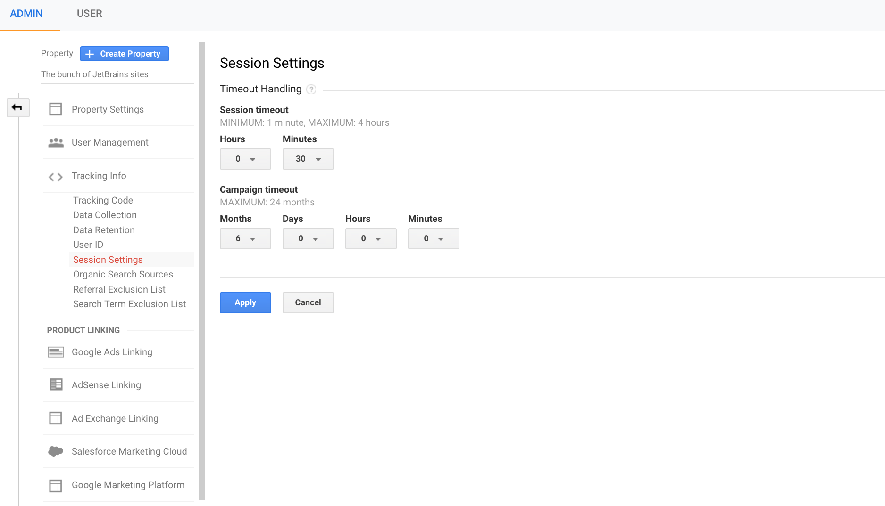
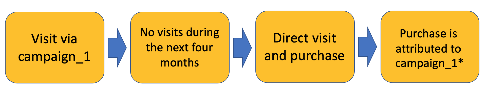
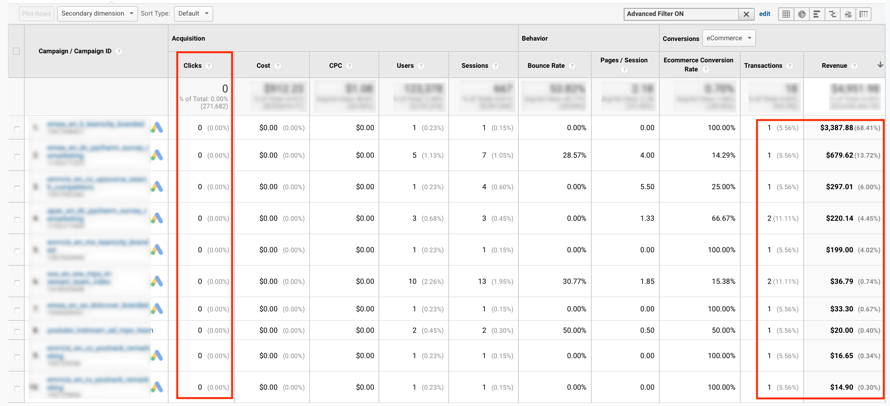

LINKS
August 16, 2019
To find the campaign timeout setting, navigate to Google Analytics Admin Panel -> Tracking Info (configured at the property level) -> Session Settings -> Campaign timeout.

The length of a session and a campaign depends on your site and business specifics. The campaign timeout cannot be greater than two years. But what does that mean, exactly?
Let’s consider the following example. The campaign timeout is set to six months (which is the default value, by the way). Someone reached your website via a particular campaign and then didn’t return for four months in a row. However, after that, this user revisited your site using a direct link and finally made a purchase. Since the campaign timeout value is set to six months in all reports except the reports from the Multi-Channel Funnels section, you’ll see that this purchase is attributed to the campaign.

* in non-MCF reports
Cases like this are usually the reason why you may see some purchases attributed to campaigns that ended a long time ago and no longer bring new visitors. For instance, take a look at this screenshot.

The number of clicks is zero, but there were sessions and purchases. We see these purchases because of the campaign timeout setting.
Campaign timeout can’t be longer than two years because this is exactly how long a ga cookie lives (which is used to distinguish users). Apparently, a purchase is attributed to a particular campaign because of the campaign timeout setting, only if a cookie persists.
Another important thing to remember is that you won’t see purchases that happen after three months in the Assisted Conversion report. The maximum lookback window in any MCF report (including Assisted Conversion reports) is 90 days, so sometimes it’s possible to see a purchase that happens four months after a campaign click in standard reports, but there is no way to find it in the MCF reports. This may look weird, but it’s normal in terms of how Google Analytics reports work.
The main question is: which campaign timeout value is the best to use? There is no single answer. Everything depends on your business specifics. If your purchase cycle is short – for example, you are selling pizza on the Internet – it makes sense to set the campaign timeout to a minimum value, maybe to less than one day. However, if your purchase cycle is really long and includes a long trial, with the decision about the purchase made over a period of months – it makes sense to set campaign timeout to the relevant number of months.
If there are any questions – please feel free to ask them in the comments. Thanks for your attention!
LINKS